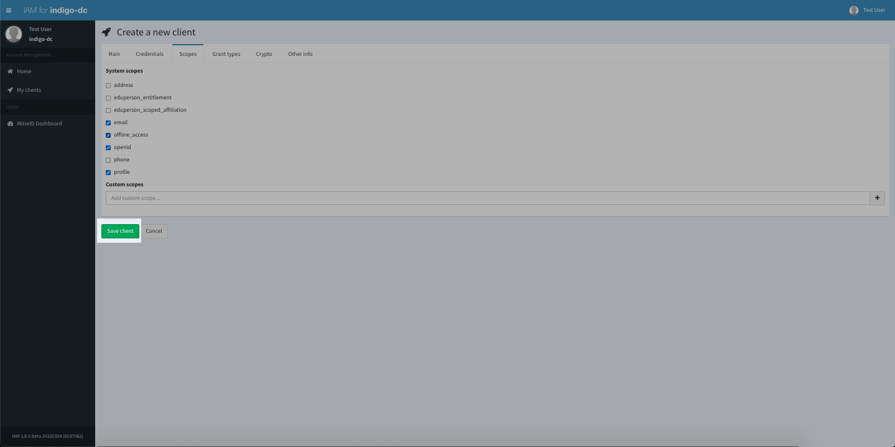
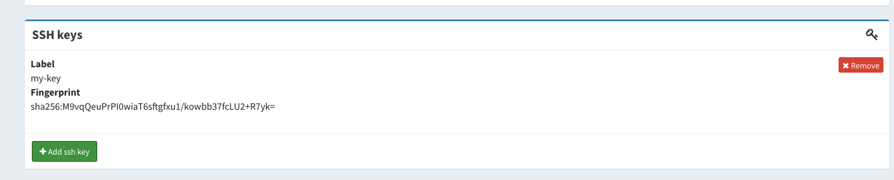

This is the multi-page printable view of this section. Click here to print.
User
- 1: Joining an IAM-managed organization
- 2: Obtaining an IAM access token from a CLI
- 3: Re-sign AUP
- 4: Registering a client
- 5: Change account information
- 6: Changing the account password
- 7: JWT client authentication
- 8: Linking an external account
- 9: Linking an X.509 certificate
- 10: Managing active tokens
- 11: Managing approved sites
- 12: Managing SSH keys
- 13: Reset an account password
1 - Joining an IAM-managed organization
IAM provides a registration service that allows to have managed enrollment for the organization under control. This mean that access to the organization is only granted after explicit approval by a IAM administrator for the organization.
Submitting a registration request
Users can submit a registration request from the IAM login page in two ways:
- By clicking the Register a new account button:

- By attempting a login with an external authentication provider such as Google or a configured SAML IdP: in this case if the external authentication succeeds and the authenticated user is not registered in the IAM the user is taken to the registration form to confirm the registration requests.

All the fields in the registration form are mandatory. The notes field can used to include extra information targeted at IAM administrators to clarify the reasons behind a registration request.
Confirming a registration request
If the submission ends successfully, an email verification link is sent to the user email address with a request to confirm his registration request.

Once the request is confirmed, IAM administrators are notified with an email.
Choosing a password
Once the submitteed request is approved by an IAM administrator, an email is sent to the user with a reset password link. This URL points to page where the user can choose a password for the IAM account.

Once the password is set, users can login to the IAM using the username chosen at registration time and the password.
2 - Obtaining an IAM access token from a CLI
A token can be obtained from a command-line interface (CLI) in two ways:
- using
oidc-agent - using scripts linked to this page, using the resource-owner password credentials flow or the OAuth device flow
In this section we recommend the installations of a set of tools that can help in managing tokens.
Obtaining a token using oidc-agent
oidc-agent is a useful tool to easily get and manage access tokens for command-line applications.
Installing oidc-agent
See oidc-agent installation instructions.
Quick CENTOS7 installation instructions
This recipe shows how to quickly install oidc-agent on CENTOS 7.
$ yum -y install epel-release
$ yum -y install https://github.com/indigo-dc/oidc-agent/releases/download/v3.3.1/oidc-agent-3.3.1-1.el7.x86_64.rpm
Bootstrapping oidc-agent
The first thing to do is to start oidc-agent.
This can be done issuing the following command:
$ eval $(oidc-agent)
Agent pid 62088
Registering a client
In order to obtain a token out of IAM, a user needs a client registered.
oidc-agent can automate this step and store client credentials securely
on the user machine. This is a one-time operation, you do not need a new
client every time you need a token.
A new client can be registered using the oidc-gen command, as follows:
$ oidc-gen -w device wlcg
The -w device instructs oidc-agent to use the device code flow for the
authentication, which is the recommended way with IAM.
oidc-agent will display a list of different providers that can be used for registration:
[1] https://wlcg.cloud.cnaf.infn.it/
[2] https://iam-test.indigo-datacloud.eu/
...
[20] https://oidc.scc.kit.edu/auth/realms/kit/
Select one of the registered providers, or type a custom issuer (for IAM, the
last character of the issuer string is always a /, e.g.
https://wlcg.cloud.cnaf.infn.it/).
Then oidc-agent asks for the scopes, typing max (without quotes) allows to
get all the allowed scopes.
oidc-agent will register a new client and store the client credentials and a refresh token locally in encrypted form (the agent will ask for a password from the user).
As mentioned, oidc-gen is meant to be used only once, when you need a client registered.
Managing oidc-agent account configurations
To see the list of locally configured accounts use the following command:
> oidc-add -l
The following account configurations are usable:
DEEP-ac
XDC
atlas
...
cms-voms-importer
escape
escape-monitoring
iam-test
infn-cloud
wlcg
You can then load an account in the agent again with the oidc-add command, as follows:
oidc-add wlcg
Once you’ve loaded the account, you can use oidc-token to get tokens for that account.
Getting tokens with oidc-token
Tokens can be obtained using the oidc-token command, as follows:
oidc-token wlcg
This will request a token with all the scopes requested at client registration
time. To limit the scopes included in the token, the -s flag can be used, as
follows:
oidc-token -s storage.read:/ wlcg
The token audience can be limited using the --aud flag,
oidc-token --aud example.audience -s storage.read:/ wlcg
Accessing oidc-agent client configuration
Often is useful to get details about the client configuration generated
by oidc-agent. This can be done with the oidc-gen -p command, that is
used to print a client configuration, as in the following example:
❯ oidc-gen -p wlcg
Enter decryption password for account config 'wlcg':******
{
"name": "wlcg",
"client_name": "oidc-agent:wlcg",
"issuer_url": "https://wlcg.cloud.cnaf.infn.it/",
"device_authorization_endpoint": "https://wlcg.cloud.cnaf.infn.it/devicecode",
"daeSetByUser": 0,
"client_id": "*****",
"client_secret": "*****",
"refresh_token": "****.*****.",
"cert_path": "",
"scope": "storage.create:/ openid offline_access storage.read:/ eduperson_scoped_affiliation storage.modify:/ wlcg wlcg.groups eduperson_entitlement",
"audience": "",
"redirect_uris": ["edu.kit.data.oidc-agent:/redirect", "http://localhost:8080", "http://localhost:47947", "http://localhost:4242"],
"username": "",
"password": "",
"client_id_issued_at": 1600444894,
"registration_access_token": "****",
"registration_client_uri": "https://wlcg.cloud.cnaf.infn.it/register/****",
"token_endpoint_auth_method": "client_secret_basic",
"grant_types": ["urn:ietf:params:oauth:grant-type:device_code", "refresh_token"],
"response_types": ["token"],
"application_type": "web",
"cert_path": "",
"audience": ""
}
Obtaining a token with the password flow
The password flow allows a user to get a token from the IAM by using the IAM local credentials (i.e. the username/password credentials setup at IAM registration time).
In order to use the password flow, a non-privileged user has to:
- register a client following the instructions given in [the client registration][client-registration] section
- Note down the
client_idof the generated client and ask an IAM administrator to enable the password flow for such client - Wait until the client as the password flow enabled
- Use a script similar to the one given here (or write your own following the recommendations of the RFC) to obtain a token out of the IAM
Warning
While this approach is viable, it is deprecated since:
- it forces the user to request the activation of the password flow for the client (it is disabled by default for dynamically registered clients)
- it forces the user to authenticate with the local IAM credentials (external authentication mechanisms such as Google or SAML cannot be used)
- it exposes the user credentials to the client application
The device code flow, described in the next section, does not have these limitations and should be preferred over the password flow.
Obtaining a token with the device code flow
The device code flow allows a user to get a token from the IAM from a CLI interface while using an external browser for the authentication step. This is convenient since:
- it does not require any authorization from administrators (the device code flow can be requested by the user at client registration time)
- it allows the user to authenticate with any of the authentication mechanisms supported by the IAM
- it does not expose the user credentials to the client application
For nitty and gritty details on how the flow works, see the RFC.
After having registered a client with the device flow enabled (see client registration section), the device code flow can be used to obtain a token using a script like the one here which does the following:
- contacts the device flow endpoint to start a device flow authentication and authorization
- prints code information on the terminal
- waits for user input to proceed and obtain the token(s)
3 - Re-sign AUP
Users can re-sign AUP at any time.
Re-sign AUP using the dashboard
Log into the service using user credentials:
To re-sign AUP click on Re-sign AUP button:
To confirm your choice click on I agree with the AUP terms button on the modal window:
On success you will get a confirmation message and AUP expiration will be updated:
4 - Registering a client
IAM exposes the OpenID Connect/OAuth dynamic client registration functionality on its own dashboard (it has been migrated by MitreID dashboard).
In OAuth terminology, a client is an application or service that can interact with an authorization server for authentication/authorization purposes.
A new client can be registered in the IAM in two ways:
- using the dynamic client registration API;
- via the IAM dashboard (which simply acts as a client to the API mentioned above).
Registering a client using the dashboard
Log into the service and click on the My Clients link on the left navigation bar:
From the My client link, select New client:

A form will open that enable you to configure your client:
The minimum information you have to provide is:
- Client name: choose a name for your client
- Redirect URI(s): one or more redirect URIs for your client; these are required if you choose to enable the authorization code flow;
Remember to select the offline_access scope from the Scopes tab if you
want to request refresh tokens for the client being created:
You can then click the Save button at the bottom of the page:

IAM will then generate client credentials for your client and other information that will be displayed as follows:
5 - Change account information
Once logged in, you can change information in your account (if allowed by the IAM configuration) by clicking the “Edit Details” from your home page:

6 - Changing the account password
Once logged in you can change your account password by clicking on the “Change password” button in your home page:
Note that the “Change password” functionality is only useful if you remember your IAM account password. In case you forgot it, logout from the IAM and follow the instructions in the Reset account password section.
7 - JWT client authentication
IAM supports several methods to authenticate an OAuth2 client to the token endpoint.
The authentication via JWT assertion is defined in RFC7523. It can be used to request an access token when a client wishes to utilize an existing trust relationship, expressed through the semantics of the JWT, without a direct user-approval step at the authorization server. Client authentication using a JWT is nothing more than an alternative way for a client to authenticate to the token endpoint and must be used in conjunction with some grant type to form a complete and meaningful protocol request, for instance the authorization code flow (when a user has to approve the client in order to access to their resources), the client credential flow (when a client is acting on its own behalf), etc.
JWT assertion validation
The IAM Authorization Server validates the JWT assertion and issues an access token if the following conditions are satisfied.
JWT assertion header
- the “alg” (algorithm) claim must be present to indicate the algorithm used to sign the token;
- the “kid” (key ID) claim must be present in the asymmetrically signed assertions to identify the public key.
JWT assertion body
- the “iss” (issuer) and “sub” (subject) claims must be equal to the
client_id; - the “aud” (audience) claim must be equal to the token endpoint URL;
- the “exp” (expiration) claim must be present to limit the JWT assertion lifetime;
- the “jti” (JWT ID) claim must be present and provides a unique identifier for the token.
Client settings
You need to configure an OAuth2 client in IAM which is used to issue a JWT assertion and get an access token.
Follow the instruction on how to register a new client, or edit an existing client (click on the My clients link on the left navigation bar of the IAM dashboard and select the client name). From the Credentials tab you can choose the authentication method to the token endpoint:
- client secret with symmetrically signed JWT assertion;
- asymmetrically signed JWT assertion.
Symmetrically signed JWT assertion
This authentication mechanism is used when your JWT assertion is signed with a symmetric key.
To use this mechanism, select Client secret with symmetrically signed JWT assertion; the Client secret generated by IAM must be used as symmetric key to sign your JWT assertion.

A symmetrically signed JWT assertion looks like
## Header
{
"alg": "HS256"
}
## Payload
{
"sub": "181f26f9-4562-4919-b718-759241485335",
"aud": "https://iam.local.io/token",
"nbf": 1649162752,
"iss": "181f26f9-4562-4919-b718-759241485335",
"exp": 1651754752,
"iat": 1649162752,
"jti": "120240aa-e389-4a55-8384-f4d7a54c2633"
}
Asymmetrically signed JWT assertion
This authentication mechanism is used when your JWT assertion is signed with a private key.
To use this mechanism, select Asymmetrically signed JWT assertion and then choose how IAM can get the public key used to validate your JWT assertion. Into the section Public key set below, choose between:
- By URI and provide a valid JSON Web Keyset URI in the corresponding box,
- or By value and provide a JSON Web Keyset value in the corresponding box.

An asymmetrically signed JWT assertion looks like
## Header
{
"alg": "RS256",
"kid": "rsa1"
}
## Payload
{
"sub": "bdb6ca15-be9c-470a-81dc-69d30dabb340",
"aud": "https://iam.local.io/token",
"nbf": 1649162752,
"iss": "bdb6ca15-be9c-470a-81dc-69d30dabb340",
"exp": 1651754752,
"iat": 1649162752,
"jti": "f4392c1e-6d6a-423e-8e5e-5d114585f750"
}
Getting an access token
Here is an example of an HTTP POST request to the token endpoint where the client is authenticated with JWT assertion and is authorized via the client credential OAuth2 flow.
$ curl -d client_assertion=${JWTA} -d client_assertion_type=urn:ietf:params:oauth:client-assertion-type:jwt-bearer -d grant_type=client_credentials https://iam.local.io/token | jq
{
"access_token": "eyJraWQiOiJyc2ExIiwiY...",
"token_type": "Bearer",
"expires_in": 3599,
"scope": "storage.read:/ storage.create:/ storage.modify:/"
}
If not explicitly requested in the payload, the scopes returned in the access token are all the ones registered for your client.
8 - Linking an external account
A user can link an external account from the IAM dashboard (i.e., the user must be logged in the IAM service). The following sets of screenshots show the process followed to link a Google account.
Clicking on the “Link Google account” opens a confirmation dialog:
When the user clicks on the Link, button is redirected to Google for authentication:
After a succesfull authentication the user is redirected to the IAM page, and a confirmation dialog shows that the account was linked succesfully:
Now the user can logout from the IAM and login using the Sign in with Google button.
A similar process is implemented for SAML external accounts.
9 - Linking an X.509 certificate
IAM provides the ability to link X.509 certificates to a user account. X.509 account linking works if:
- X.509 certificate authentication is enabled for the IAM instance in use; for more information on this see the Getting started guide
- The certificate is correctly installed in the browser used to access the IAM;
- The certificate is trusted by the IAM (i.e. is signed by a certificate authority known and trusted by the IAM)
Authenticating with an X.509 certificate
If a certificate is correctly configured in the browser, the browser will show a dialog to select whether to authenticate with the certificate or not as in the following screenshot:

Note that this happens when enstabilishing the connection to the IAM. If no dialog is shown, either:
- there’s no certificate in the browser that is trusted by the IAM (either the certificate is expired or signed by a CA not trusted by the IAM)
- a certificate was selected automatically by the browser when authenticating to the IAM
In case the certificate used for the authentication is linked to an organization account, the IAM login page will display a “Sign in with your certificate” button:
Linking a certificate
If a certificate was recognized but is not linked to any membership in the IAM, the user will have to authenticate with other credentials (local username & password, or external authentication mechanisms (e.g. Google)).
After having logged in, the user can link a certificate by clickin on the Link Certificate button:

Note that the Link certificate button will be shown in the page only if a valid and trusted certificate was detected by the IAM during the TLS handshake.
Clicking the Link certificate button opens a dialog that shows information about the certificate that should be linked to the account:

If the linking completes succesfully, the linked certificate information will be shown in the X.509 certificates panel:

To check that the linking actually works, the user can logout from the IAM and login again with the certificate.
Unlinking a certificate
A user can unlink a certificate by clicking on the Unlink button shown in the certificate panel (see the image above).
10 - Managing active tokens
You can see which access and refresh tokens bound to your identity are currently active from the MitreID dashboard following the “Manage Active Tokens” link:
11 - Managing approved sites
You can manage approved sites (i.e. sites and services that you approved when authenticating at the IAM) from the MitreID dashboard following the “Manage Approved Sites” link:
12 - Managing SSH keys
Starting with version v1.7.0, IAM allows users to link SSH public keys to
their accounts.
SSH keys are then exposed to relying parties in two ways:
- through the IAM SCIM APIs;
- as a claim in the OpenID Connect
userinfoendpoint response, if the token has thessh-keysscope.
Managing account SSH keys
The IAM dashboard allows a user to link one or more SSH keys to their account, as shown below:

Accessing account SSH keys via SCIM APIs
As clarified in the SCIM APIs documentation, ssh keys are exposed in the user information returned to authorized clients, as in the following fragment:
{
"id": "80e5fb8d-b7c8-451a-89ba-346ae278a66f",
...
"userName": "test",
"urn:indigo-dc:scim:schemas:IndigoUser": {
"sshKeys": [
{
"display": "my-key",
"primary": true,
"value": "ssh-rsa AAAAB...",
"fingerprint": "M9vqQeuPrPI0wiaT6sftgfxu1/kowbb37fcLU2+R7yk=",
"created": "2021-08-25T15:18:45.978+02:00",
"lastModified": "2021-08-25T15:18:45.978+02:00"
}
],
}
}
Accessing account SSH keys via the userinfo endpoint
SSH keys linked to a user account are returned in the userinfo endpoint
response if the token used to access the endpoint has the ssh-keys scope, as
in the following example:
❯ curl -s -L -H "Authorization: Bearer ${AT}" https://iam.local.io/userinfo | jq .
{
"sub": "80e5fb8d-b7c8-451a-89ba-346ae278a66f",
"ssh_keys": [
{
"fingerprint": "M9vqQeuPrPI0wiaT6sftgfxu1/kowbb37fcLU2+R7yk=",
"value": "ssh-rsa AAAAB3NzaC1yc2E..."
}
]
}
Note that the ssh-keys scope is a restricted scope, i.e., it can be
assigned to client registered in IAM only by IAM administrators.
13 - Reset an account password
Users can reset their password from the IAM login page by clicking on the Forgot your password? link, which opens a dialog where users can then enter their email address, and if the entered email address is linked to a registered user a reset password link will be sent to such email address.